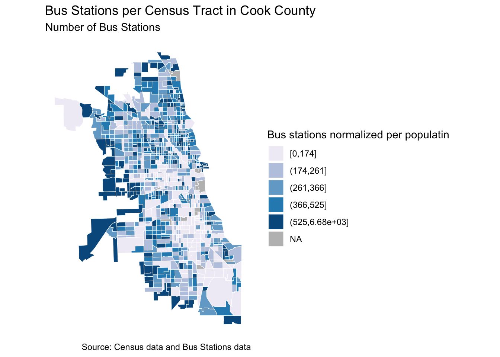
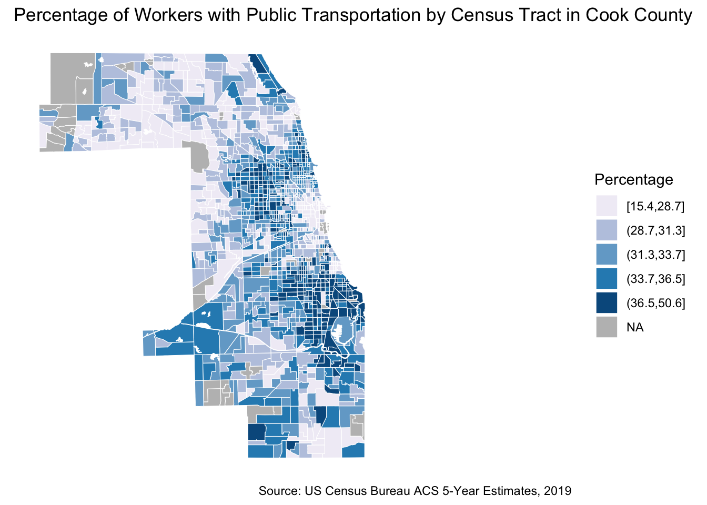
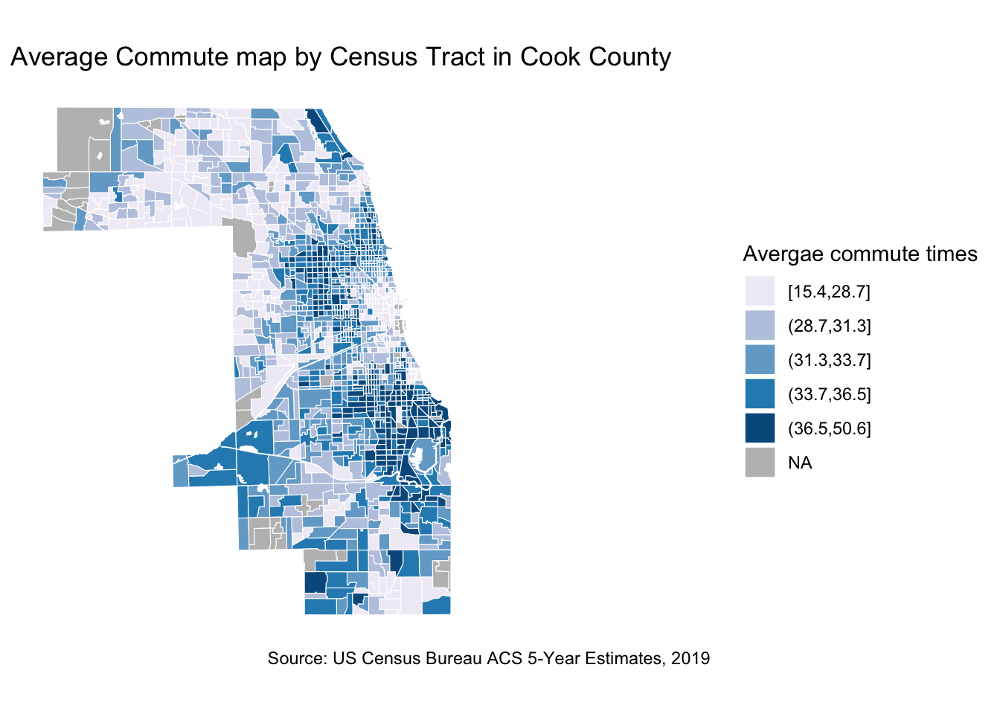

In this lab, we will learn how to use different types of data to explore and visualize access to transportation. This will allow us to identify the spatial disparities due to unequal distribution of transportation infrastructure (e.g. transit stops, transit routes, transit frequency, etc.). We are also able to see the repercussions on commute quality (i.e., trip duration, transportation expenses, etc.)
In this lab(link) the main things you will learn are the following:
Calculate and visualize accessibility measure to transportation infrastructure (i.e., bus stops, charging stations, etc)
Calculate and visualize percentage of public transportation users
Calculate and visualize average commute times
You can build on those to see the correlation between income/race/gender and the different transportation equity measures.
Github Lab Repository
If you have not already done so, follow this link to accept the lab Github Classroom assignment repository.
Access to transportation infrastructure
In this example I am using bus stops as a proxy for transportation infrastructure. You can use many other infrastructure types and explore their distribution in relation to socioeconomic and demographics of you neighborhood/region. You can find transit information from GTFS as well as open source portals. For the example I showed during class on electric charging stations, I had to grab this data from a private provider.
First lets start by loading our libraries. By now, you should be familiar with tidycensus, tidyverse, and tigris. I am introducing Simple Futures (sf) for some spatial analysis (i.e., calculating the density of buses per census tract)
Linking to GEOS 3.10.2, GDAL 3.4.2, PROJ 8.2.1; sf_use_s2() is TRUE
Code
library(tigris)
To enable caching of data, set `options(tigris_use_cache = TRUE)`
in your R script or .Rprofile.
Let’s download our shape files for our neighborhood. I am using Cook County as my case study. I am using the census tract level. I have defined a certain type of projection crs=4326 to unify our projection system
Code
# Download and filter Chicago census tractscook_county_tracts <-tracts(state ="IL", county ="Cook") |>st_transform(crs =4326)
Now that we have our census tract shapefile, let’s download the bus stops data, read them, and project them.
Code
# Read bus stop databus_stops <-read_csv("stops.txt")
Rows: 11217 Columns: 9
── Column specification ────────────────────────────────────────────────────────
Delimiter: ","
chr (2): stop_name, stop_desc
dbl (7): stop_id, stop_code, stop_lat, stop_lon, location_type, parent_stati...
ℹ Use `spec()` to retrieve the full column specification for this data.
ℹ Specify the column types or set `show_col_types = FALSE` to quiet this message.
Code
# Convert bus_stops data to an sf objectbus_stops_sf <-st_as_sf(bus_stops, coords =c("stop_lon", "stop_lat"), crs =4326)
Last data input we need is the socioeconomic of our neighborhood. For the sake of this tutorial I am limiting it to population and household median and income. But please feel free to explore further attribute.
Code
# Specify the ACS variables you want to downloadvariables <-c("B01003_001", # Total population"B19013_001") # Median household income# Download the data for Cook County census tractscook_county_data <-get_acs(geography ="tract",state ="17",county ="031",variables = variables,year =2019,output="wide",survey ="acs5",geometry =FALSE)
Getting data from the 2015-2019 5-year ACS
To make our table more legible, I am renaming our columns and rescaling the median income variable
Code
cook_county_data <- cook_county_data |>rename(name = NAME, pop_tot = B01003_001E, med_income = B19013_001E) |>select(GEOID, name, pop_tot, med_income) # scale income data so you are able to correlate it with transportation infrastructurecook_county_data <- cook_county_data |>mutate(income_scaled =scale(med_income))library(gt)cook_county_data |>head() |>gt()
GEOID
name
pop_tot
med_income
income_scaled
17031630200
Census Tract 6302, Cook County, Illinois
1825
37422
-0.83877210
17031580700
Census Tract 5807, Cook County, Illinois
5908
47000
-0.57701469
17031590600
Census Tract 5906, Cook County, Illinois
3419
46033
-0.60344186
17031600700
Census Tract 6007, Cook County, Illinois
2835
45294
-0.62363801
17031611900
Census Tract 6119, Cook County, Illinois
1639
24507
-1.19172646
17031804505
Census Tract 8045.05, Cook County, Illinois
3445
71438
0.09085204
Great! Now we have our census demographic data ready. Let’s spend time on preparing our bus stops data. Remeber these are represented in Lat, Long. We have to associate them to the correct census tracts. To do so, we will have to spatial join the bus shapefile to the census tract shapefile. We can then calculate how many bus stops per tract are available.
Code
# buses per census tract#sf_use_s2(FALSE)bus_stops_per_census_tract <- bus_stops_sf %>%st_join(cook_county_tracts) %>%group_by(TRACTCE) %>%summarise(bus_stop_count =n()) %>%ungroup()
Now, lets create the final dataset that includes both the bus data and demographics/socioeconomics of our neighborhood. Use join.
Code
# Merge the count of bus stations per census tract back to the original census tracts shapefile.cook_county_tracts_merged <-st_join(cook_county_tracts, bus_stops_per_census_tract, left =FALSE)# Merge the count of bus stations per census tract back to the original census tracts shapefile.cook_county_tracts_merged <-left_join(cook_county_tracts_merged, cook_county_data, by ="GEOID")
Now let’s visualize this and see the ratio of population served by buses. Where are they clustered and if there are any inferences we can make.
Code
# Create a map.ggplot() +geom_sf(data = cook_county_tracts_merged, mapping =aes(fill =cut_number((pop_tot/bus_stop_count), 5)), color ="white", size =0.1) +scale_fill_brewer(palette ="PuBu", name ="Bus stations normalized per populatin",na.value ="gray")+labs(title ="Bus Stations per Census Tract in Cook County",subtitle ="Number of Bus Stations",caption ="Source: Census data and Bus Stations data") +theme_minimal() +theme(panel.background =element_blank()) +coord_sf(datum =NA)

Now it’s your turn to explore other demographic attributes and see how they are correlated to various transportation infrastructure.
Travel behavior
Providing transportation infrastructure is not sufficient for assuring equitable access to mobility. By investigating travel behavior, one can see the discrepancies in accessibility, as well as the burden that certain communities have to face. In this example, I will look at transportation modes and commute times. To make this more informative, try to explore the relationship between average commute times and race ratios per census tract.
For this analysis we will need commute information from ACS and census tract shape files for visualization.
Let’s first start by identifying the variables we are interested in. I haven’t renamed them, but good practice is to always rename your columns with legible names.
Code
variables <-c("B19013_001", # Median Household Income"B01003_001", # Total population"B03002_003", # White population"B03002_012", # Hispanic or Latinx population"B03002_004", # African American population"B08201_001", # Number of households"B08141_001", # population using transportation"B08141_006", # population drive"B08141_011", # population carpool"B08141_016", # population transit"B08141_021", # population walk"B08141_026", # population other"B08141_031", # Population working from home "B08303_001", # Population of commuters to work"B08303_002", # Population of commuters less than 5 min"B08303_003", # Population of commuters 5 to 9 minutes"B08303_004", # Population of commuters 10 to 14 minutes"B08303_005", # Population of commuters 15 to 19 minutes"B08303_006", # Population of commuters 20 to 24 minutes "B08303_007", # Population of commuters 25 to 29 minutes "B08303_008", # Population of commuters 30 to 34 minutes "B08303_009", # Population of commuters 35 to 39 minutes "B08303_010", # Population of commuters 40 to 44 minutes "B08303_011", # Population of commuters 45 to 59 minutes "B08303_012", # Population of commuters 60 to 89 minutes"B08303_013") # Population of commuters 90 or more minutes
Let’s download the data from ACS using tidycensus.
Code
cook_county_data <-get_acs(geography ="tract", variables = variables, state ="IL", county ="Cook",survey ="acs5", output="wide",year =2019)
Getting data from the 2015-2019 5-year ACS
We can use the same shapefile from the previous exercise, so there is no need to re download the census tract shapefile. Now let’s join our demographic data to our shapefile using GEOID as our common index.
Code
cook_county_tracts <-tracts(state ="IL", county ="Cook") |>erase_water(area_threshold = .9, year =2020) %>%st_transform(crs =4326)
Retrieving data for the year 2020
Fetching area water data for your dataset's location...
Erasing water area...
If this is slow, try a larger area threshold value.
Code
cook_county_data_sf <-left_join(cook_county_tracts, cook_county_data, by =c("GEOID"="GEOID"))
Now that we have master dataframe with all the data in it. Let’s go ahead and calculate two measure:
Percentage of transit users (pct_public_transit)
Average commute time (avg_commute_travel_time). For this measure, I am multiplying each range of commute time by the lowest value in the range (i.e. 5 mins in 5-10mins). I then add all the values and divide them by the total number pf commuters.
Since the are regions with no commuters, we get inf (infinite values). We have to make sure to convert them to NA so we are able to analyse these and visualize them.
Lets have a look at the public transportation users and where they are located
Code
# Create public trasnportation users mapggplot() +geom_sf(data = cook_county_data_sf, mapping =aes(fill =cut_number((avg_commute_travel_time), 5)), color ="white", size =0.1) +scale_fill_brewer(palette ="PuBu", name ="Percentage",na.value ="gray")+labs(title ="Percentage of Workers with Public Transportation by Census Tract in Cook County",caption ="Source: US Census Bureau ACS 5-Year Estimates, 2019") +theme_minimal() +theme(panel.background =element_blank()) +coord_sf(datum =NA)

Now let’s have a look at the average commute time in each census tract and how they are spatially distributed.
Code
# Create average commute times mapggplot() +geom_sf(data = cook_county_data_sf, mapping =aes(fill =cut_number((avg_commute_travel_time), 5)), color ="white", size =0.1) +scale_fill_brewer(palette ="PuBu", name ="Avergae commute times",na.value ="gray")+labs(title ="Average Commute map by Census Tract in Cook County",caption ="Source: US Census Bureau ACS 5-Year Estimates, 2019") +theme_minimal() +theme(panel.background =element_blank()) +coord_sf(datum =NA)

Lab Evaluation
In evaluating your lab submission, we’ll be paying attention to the following:
As you get into the lab, please feel welcome to ask us questions, and please share where you’re struggling with us and with others in the class.
References
Source Code
---title: "Measuring Transit Equity"sidebar: falsetoc: truetoc-depth: 4page-layout: fullformat: html: code-fold: show code-overflow: wrap code-tools: source: true toggle: false caption: nonefig-responsive: trueeditor: visual---## IntroductionIn this lab, we will learn how to use different types of data to explore and visualize access to transportation. This will allow us to identify the spatial disparities due to unequal distribution of transportation infrastructure (e.g. transit stops, transit routes, transit frequency, etc.). We are also able to see the repercussions on commute quality (i.e., trip duration, transportation expenses, etc.)In this lab(**link**) the main things you will learn are the following:1. Calculate and visualize accessibility measure to transportation infrastructure (i.e., bus stops, charging stations, etc)2. Calculate and visualize percentage of public transportation users3. Calculate and visualize average commute timesYou can build on those to see the correlation between income/race/gender and the different transportation equity measures.## Github Lab RepositoryIf you have not already done so, follow [this link](https://classroom.github.com/a/GaBYrVKl) to accept the lab Github Classroom assignment repository.## Access to transportation infrastructureIn this example I am using bus stops as a proxy for transportation infrastructure. You can use many other infrastructure types and explore their distribution in relation to socioeconomic and demographics of you neighborhood/region. You can find transit information from [GTFS](https://developers.google.com/transit/gtfs/reference) as well as open source portals. For the example I showed during class on electric charging stations, I had to grab this data from a private provider.First lets start by loading our libraries. By now, you should be familiar with tidycensus, tidyverse, and tigris. I am introducing [Simple Futures (sf)](https://r-spatial.github.io/sf/) for some spatial analysis (i.e., calculating the density of buses per census tract)```{r}# Load required packageslibrary(tidycensus)library(tidyverse)library(sf)library(tigris)```Let's download our shape files for our neighborhood. I am using Cook County as my case study. I am using the census tract level. I have defined a certain type of projection [crs=4326](https://epsg.io/4326) to unify our projection system```{r}# Download and filter Chicago census tractscook_county_tracts <-tracts(state ="IL", county ="Cook") |>st_transform(crs =4326)```Now that we have our census tract shapefile, let's download the bus stops data, read them, and project them.```{r}# Read bus stop databus_stops <-read_csv("stops.txt")# Convert bus_stops data to an sf objectbus_stops_sf <-st_as_sf(bus_stops, coords =c("stop_lon", "stop_lat"), crs =4326)```Last data input we need is the socioeconomic of our neighborhood. For the sake of this tutorial I am limiting it to population and household median and income. But please feel free to explore further attribute.```{r}# Specify the ACS variables you want to downloadvariables <-c("B01003_001", # Total population"B19013_001") # Median household income# Download the data for Cook County census tractscook_county_data <-get_acs(geography ="tract",state ="17",county ="031",variables = variables,year =2019,output="wide",survey ="acs5",geometry =FALSE)```To make our table more legible, I am renaming our columns and rescaling the median income variable```{r}cook_county_data <- cook_county_data |>rename(name = NAME, pop_tot = B01003_001E, med_income = B19013_001E) |>select(GEOID, name, pop_tot, med_income) # scale income data so you are able to correlate it with transportation infrastructurecook_county_data <- cook_county_data |>mutate(income_scaled =scale(med_income))library(gt)cook_county_data |>head() |>gt()```Great! Now we have our census demographic data ready. Let's spend time on preparing our bus stops data. Remeber these are represented in Lat, Long. We have to associate them to the correct census tracts. To do so, we will have to spatial join the bus shapefile to the census tract shapefile. We can then calculate how many bus stops per tract are available.```{r}# buses per census tract#sf_use_s2(FALSE)bus_stops_per_census_tract <- bus_stops_sf %>%st_join(cook_county_tracts) %>%group_by(TRACTCE) %>%summarise(bus_stop_count =n()) %>%ungroup()```View results```{r}bus_stops_per_census_tract |>head() |>gt()```Now, lets create the final dataset that includes both the bus data and demographics/socioeconomics of our neighborhood. Use join.```{r}# Merge the count of bus stations per census tract back to the original census tracts shapefile.cook_county_tracts_merged <-st_join(cook_county_tracts, bus_stops_per_census_tract, left =FALSE)# Merge the count of bus stations per census tract back to the original census tracts shapefile.cook_county_tracts_merged <-left_join(cook_county_tracts_merged, cook_county_data, by ="GEOID")```Now let's visualize this and see the ratio of population served by buses. Where are they clustered and if there are any inferences we can make.```{r}# Create a map.ggplot() +geom_sf(data = cook_county_tracts_merged, mapping =aes(fill =cut_number((pop_tot/bus_stop_count), 5)), color ="white", size =0.1) +scale_fill_brewer(palette ="PuBu", name ="Bus stations normalized per populatin",na.value ="gray")+labs(title ="Bus Stations per Census Tract in Cook County",subtitle ="Number of Bus Stations",caption ="Source: Census data and Bus Stations data") +theme_minimal() +theme(panel.background =element_blank()) +coord_sf(datum =NA) ```Now it's your turn to explore other demographic attributes and see how they are correlated to various transportation infrastructure.## Travel behaviorProviding transportation infrastructure is not sufficient for assuring equitable access to mobility. By investigating travel behavior, one can see the discrepancies in accessibility, as well as the burden that certain communities have to face. In this example, I will look at transportation modes and commute times. To make this more informative, try to explore the relationship between average commute times and race ratios per census tract.For this analysis we will need commute information from ACS and census tract shape files for visualization.Let's first start by identifying the variables we are interested in. I haven't renamed them, but good practice is to always rename your columns with legible names.```{r}variables <-c("B19013_001", # Median Household Income"B01003_001", # Total population"B03002_003", # White population"B03002_012", # Hispanic or Latinx population"B03002_004", # African American population"B08201_001", # Number of households"B08141_001", # population using transportation"B08141_006", # population drive"B08141_011", # population carpool"B08141_016", # population transit"B08141_021", # population walk"B08141_026", # population other"B08141_031", # Population working from home "B08303_001", # Population of commuters to work"B08303_002", # Population of commuters less than 5 min"B08303_003", # Population of commuters 5 to 9 minutes"B08303_004", # Population of commuters 10 to 14 minutes"B08303_005", # Population of commuters 15 to 19 minutes"B08303_006", # Population of commuters 20 to 24 minutes "B08303_007", # Population of commuters 25 to 29 minutes "B08303_008", # Population of commuters 30 to 34 minutes "B08303_009", # Population of commuters 35 to 39 minutes "B08303_010", # Population of commuters 40 to 44 minutes "B08303_011", # Population of commuters 45 to 59 minutes "B08303_012", # Population of commuters 60 to 89 minutes"B08303_013") # Population of commuters 90 or more minutes```Let's download the data from ACS using tidycensus.```{r}cook_county_data <-get_acs(geography ="tract", variables = variables, state ="IL", county ="Cook",survey ="acs5", output="wide",year =2019)```We can use the same shapefile from the previous exercise, so there is no need to re download the census tract shapefile. Now let's join our demographic data to our shapefile using GEOID as our common index.```{r}cook_county_tracts <-tracts(state ="IL", county ="Cook") |>erase_water(area_threshold = .9, year =2020) %>%st_transform(crs =4326)cook_county_data_sf <-left_join(cook_county_tracts, cook_county_data, by =c("GEOID"="GEOID"))```Now that we have master dataframe with all the data in it. Let's go ahead and calculate two measure:1. Percentage of transit users (pct_public_transit)2. Average commute time (avg_commute_travel_time). For this measure, I am multiplying each range of commute time by the lowest value in the range (i.e. 5 mins in 5-10mins). I then add all the values and divide them by the total number pf commuters.```{r}cook_county_data_sf <- cook_county_data_sf %>%mutate(pct_public_transit = B08141_016E / B08141_001E *100,avg_commute_travel_time = ((B08303_002E*1+ B08303_003E*5+ B08303_004E*10+ B08303_005E*15+ B08303_006E*20+ B08303_007E*25+ B08303_008E*30+ B08303_009E*35+ B08303_010E*40+ B08303_011E*45+ B08303_012E*60+ B08303_013E*90)/1)/B08303_001E)```Since the are regions with no commuters, we get inf (infinite values). We have to make sure to convert them to NA so we are able to analyse these and visualize them.```{r}cook_county_data_sf$avg_commute_travel_time[sapply(cook_county_data_sf$avg_commute_travel_time, is.infinite)] <-NA```Lets have a look at the public transportation users and where they are located```{r}# Create public trasnportation users mapggplot() +geom_sf(data = cook_county_data_sf, mapping =aes(fill =cut_number((avg_commute_travel_time), 5)), color ="white", size =0.1) +scale_fill_brewer(palette ="PuBu", name ="Percentage",na.value ="gray")+labs(title ="Percentage of Workers with Public Transportation by Census Tract in Cook County",caption ="Source: US Census Bureau ACS 5-Year Estimates, 2019") +theme_minimal() +theme(panel.background =element_blank()) +coord_sf(datum =NA) ```Now let's have a look at the average commute time in each census tract and how they are spatially distributed.```{r}# Create average commute times mapggplot() +geom_sf(data = cook_county_data_sf, mapping =aes(fill =cut_number((avg_commute_travel_time), 5)), color ="white", size =0.1) +scale_fill_brewer(palette ="PuBu", name ="Avergae commute times",na.value ="gray")+labs(title ="Average Commute map by Census Tract in Cook County",caption ="Source: US Census Bureau ACS 5-Year Estimates, 2019") +theme_minimal() +theme(panel.background =element_blank()) +coord_sf(datum =NA) ```Lab EvaluationIn evaluating your lab submission, we'll be paying attention to the following:As you get into the lab, please feel welcome to ask us questions, and please share where you're struggling with us and with others in the class.## References